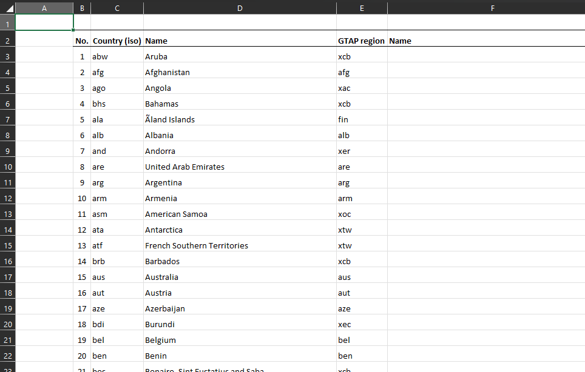
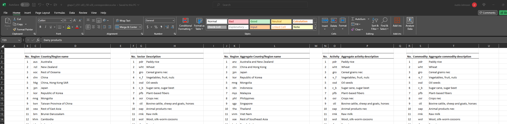
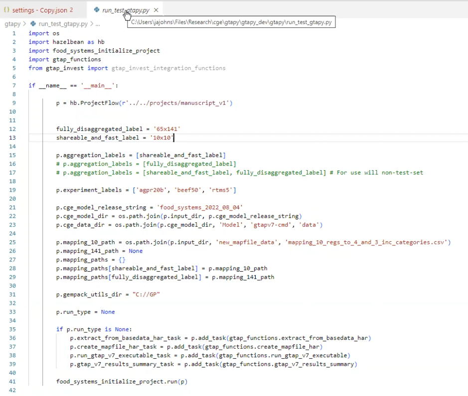
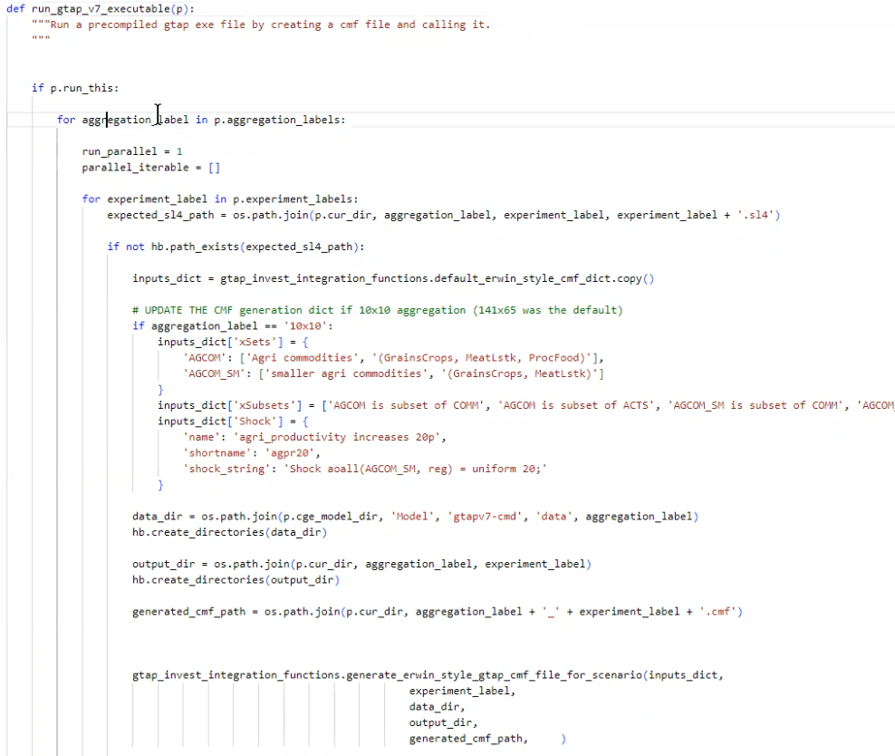

GTAPpy development notes
These are dated notes from the 2022–2023 build-out of GTAPpy, kept because they record why several conventions are the way they are and what was still open at the time. The code shown has since moved to the run_project(p) run-file convention described in Conventions, so do not copy from it. For current usage start at GTAPpy.
v2023-12-18 — correspondence files into EE spec
The open question this entry records: how to get from an Erwin-style mapping workbook to the EE spec correspondence format.
This is what a region correspondence looks like as it arrives:

Two problems with it as a machine-readable input. First, the file has to be renamed to say what it actually maps — gtapv7_r251_r160_correspondence.xlsx (and it has to stay .xlsx rather than CSV, because the mapping spans multiple worksheets). Second, No. is used twice in the same sheet, once numbering the r160 regions and once the r251 ones. Any parser reading it positionally gets this wrong, so the input format needs to disambiguate the two.
Legend information is also carried inside the region correspondence sheet, which is the wrong home for it — it needs a deliberate place of its own rather than being attached to whichever correspondence happened to need it.
The same pattern applies to sectors, which is the converted, EE-spec shape:

A terminology note worth preserving: “sector” is used here specifically for the case where you are not distinguishing COMM (commodities) from ACTS (activities) — at the time these notes were written the distinction had not been pinned down.
v2023-12-15 — conventions settled with Erwin
Proposals raised against the model release layout, and how they resolved.
Naming.
- In the release’s
Datafolder, the aggregation labelgtapaez11-50should bev11-s26-r50— database version, sector count, region count. - The most recent release carries no timestamp; dated versions of a same-named model or aggregation take the timestamp of when they were first released.
- CMF files renamed from
cwon_bau.cmftogtapv7-aez-rd_bau.cmf, andcwon_bau-es.cmftogtapv7-aez-rd_bau-es.cmf— hyphens join parts of one variable, underscores split the name into its list of fields. SIMRUNbecomes just the experiment name (bau) rather than project name plus experiment.
Project structure.
Drop
set PROJ=cwonfrom the CMF — the project is defined by the ProjectFlow object, not the command file.Separate data and output from the code release:
set MODd=..\mod set CMFd=.\cmf set SOLd=..\out set DATd=..\data%AGG%SOLdandDATddeliberately live outside the release.The goal is that a release can be run either by calling the batch file or by calling the Python run script, so the two are kept as close as possible. The asymmetry is intentional and one-directional: the batch file can only reproduce a resource-depletion run without ecosystem services, so the Python script can wrap the batch file but not the reverse.
CMF command-line options renamed to match what they are:
gtap_base_data_dir,starting_data_file_path,output_dir,starting_year,ending_year(previously positionalp1–p5).experiment_labelmay not be renameable, as it appears to be fixed by the CMF filename.
Answers from Erwin.
Can the raw GEMPACK output be read to estimate progress, for a progress bar? Yes, when running with automatic accuracy — GEMPACK reports its position:
+++> Beginning subinterval number 4. ---> Beginning pass number 1 of 2-pass calculation, subinterval 4. Beginning pass number 6 of 6-pass calculation, subinterval 6Could years drop the
Yprefix (Y2018), which breaks string→int conversion? No — keep theY. GEMPACK variable names cannot begin with a non-numeric… that is, cannot begin with a numeral.There is no
bau-SUM_Y2050, though there is forVOLandWEL— is that intentional? No:SUMdescribes the starting database, so a terminal-year SUM is meaningless. Relatedly, welfare cannot be produced in a resource-depletion run because there is no discount rate.Is everything stored in the
.sl4, making the other files redundant? No. Conversions such as results in volume terms are not in the.sl4and have to come fromsltohtorViewSOL.
v2023-11-01 — first working shocks
Shocks implemented at this point: population file replacement, GDP change, and (tentatively) yield changes.
The run file of the era created the ProjectFlow object at the top and added tasks to it — the ancestor of today’s task tree:

Note the shape already visible here: a list of aggregation labels ('10x10', '65x141') and a list of experiment labels ('agpr20b', 'beef50', 'rtms5'), iterated over as a cross product. That is the multi-aggregation philosophy described on the GTAPpy home page, present from the start.
And the task that generated a CMF and called the executable:

The interesting part is the if not hb.path_exists(expected_sl4_path) guard — skip-if-already-computed, done by hand before it was pushed down into ProjectFlow — and the per-aggregation override of xSets, xSubsets and Shock, since the 10×10 aggregation needs different set members than the 141×65 default.
What was hard. The open problem at this date was making shocks work generally: producing xSets, xSubsets and Shock statements per scenario, with READFROMFILE in the TABLO CMF as the mechanism for file-driven values. The taxonomy that came out of it is on Running GTAP by hand.
A distinction from this entry worth restating, because it caused confusion: there are shocks and there are data updates, and replacing an elasticity file is the latter. If you swap in basedata2 with a matching default2.prm and apply no shock, the model reproduces that database — the elasticities are, in that sense, calibrated to it. A supply-response elasticity behaves differently and will move the results.
Population shocks needed one more preprocessing step: the value has to be a percentage change over the default POP in the base data, so an external population file is read in and processed against the base rather than used directly.